Controllo - Contabilità analitica
Modulo Contabilità Analitica
Cliccando sulla voce di menù “Contabilità analitica”, presente all’interno della voce “Controllo” (Figura 1), si aprirà la pagina dove sarà possibile visualizzare il sistema di rilevazioni volte a determinare i costi di produzione e i risultati economici parziali dell’attività dell’azienda.
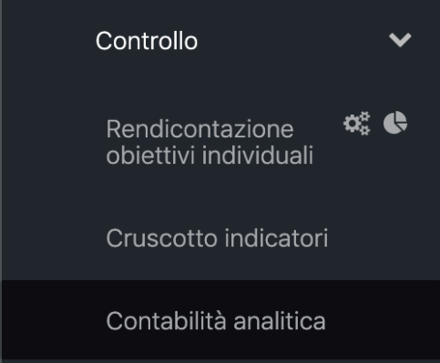
L'utente, accedendo alla scheda visualizzerà due sezioni di filtro e ricerca ed una sezione di presentazione dei dati di CoAn.
La sezione di selezione dei dati e di filtro prevede:
- periodo: viene visualizzato l'elenco dei periodi oggetto di pubblicazione, e risulta preselezionato il periodo più recente alla data di consultazione della scheda;
- CDR: Viene proposto l'elenco dei CDR attivi (da POAS), rappresentandoli graficamente all'interno della tendina per rendere immediatamente riconoscibile il livello gerarchico del CDR all'interno dell'organizzazione. Una volta selezionato il CDR verranno filtrati i dati di ricavo e costo associati ad uno o più CDC collegati al CDR selezionato.
- Filtro "solo valori CDR": una volta selezionato il CDR dal filtro precedente, la selezione prevede il filtro su tutti i CDC collegati a tutti i CDR di afferenza del CDR selezionato (ad esempio selezionando un Dipartimento, il filtro verrà applicato considerando tutti i CDC delle UOC/UOSD/UOS afferenti al Dipartimento). Al fine di consultare unicamente i costi del CDR selezionato, senza quindi considerare i costi legati ai livelli gerarchici inferiori, la scheda consente di selezionare la presente opzione "Solo valori CDR" che quindi proporrà all'utente unicamente i ricavi ed i costi associati ai CDC di afferenza diretta del CDR selezionato.
- CDC Standard regionali: tale filtro considera il collegamento tra i CDC ed i CDC Standard (Livelli di Attività) proposti dalle anagrafiche di contabilità analitica regionale, consentendo un ulteriore livello di aggregazione delle informazioni di Costo e ricavo rispetto alla visualizzazione classica per CDR o ramo gerarchico.
- Distretto: L'organizzazione aziendale prevede una suddivisione del territorio ATS in Distretti; ciascun CDC appartiene ad un distretto aziendale pertanto l'utilizzo del presente filtro consentirà di consultare i dati aggregati a livello di singolo Distretto.
Una volta applicati uno o più filtri tra quelli presentati in precedenza, occorrerà "applicarli" selezionando l'apposito tasto.
La funzione di ricerca (Figura 2) consente, sulla base dei filtri applicati e dei dati presentati nella sezione sottostante, la ricerca testuale all'interno delle descrizioni dei conti e fattori produttivi (dal livello sintetico a quello di maggior dettaglio). Una volta individuate le "ricorrenze" cercate, l'elenco dei fattori produttivi/conti evidenzierà tutte le ricorrenze trovate. Nel campo sottostante invece sarà possibile invece eseguire una ricerca digitando il fattore produttivo/conto desiderato.
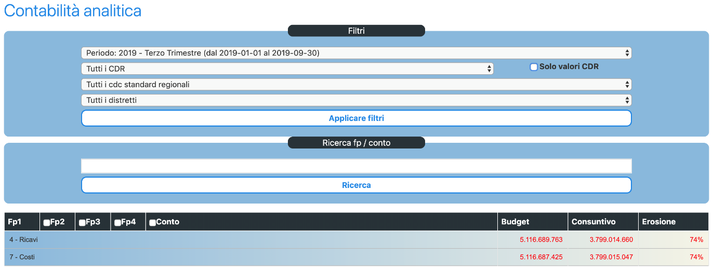
La sezione di presentazione dei dati di CoAn (Figura 3) propone all'utente la consultazione dei dati a partire dalla gerarchia dei fattori produttivi, dal livello più aggregato (ricavi-costi) al livello di maggior dettaglio (conti di CoAn). L'utente potrà, cliccando sul singolo fattore produttivo, accedere al fattore produttivo di maggior dettaglio; semplicemente fleggando le caselle poste nell'intestazione della tabella l'utente potrà "espandere" la gerarchia dei fattori produttivi direttamente fino al maggior dettaglio (livello dei Conti).
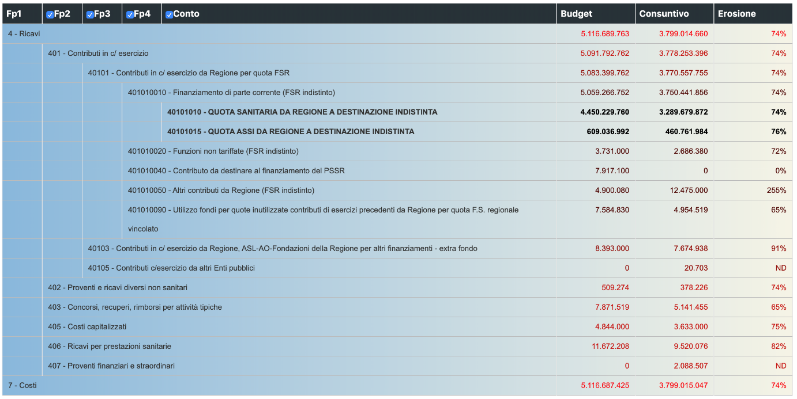
Per ogni riga (Figura 4) sarà visibile:
- Il budget messo a disposizione per quel determinato fattore produttivo,
- Il consuntivo, ovvero il budget consumato in quel determinato periodo,
- L’erosione, ovvero la percentuale di budget utilizzato.
I dati (budget, consuntivo ed erosione) ed i sub-totali presentati si aggiornano sulla base del livello di dettaglio richiesto dall'utente.
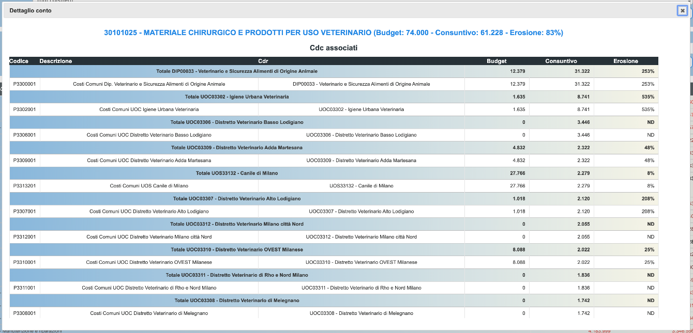
Cliccando sulla riga riferita al conto sarà possibile visualizzare la scheda con riportati i dettagli del conto selezionato. In alto sarà riportato il codice e il nome del fattore produttivo, con relativo budget a disposizione, consuntivo ed erosione. Nella tabella saranno riportati i Centri di Costo associati (CDC utilizzatori), riportando:
- Codice del CDR
- Descrizione del CDR
- Codice CDC
- Descrizione CDC
- Budget messo a disposizione
- Consuntivo
- Erosione
Strumenti di amministrazione
Sono presenti degli specifici strumenti a disposizione dell’amministratore di sistema mediante i quali lo stesso potrà effettuare tutte le operazioni utili alla configurazione del. L’accesso a tali strumenti è consentito attraverso l’icona a fianco della voce di menu “Contabilità Analitica” (Figura 5):
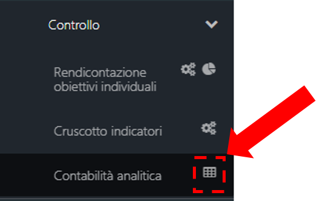
L’icona “Tabella” consente l’accesso alle sezioni di configurazione del modulo dove l’amministratore potrà definire (Figura 6):
- I periodi di riferimento della Contabilità Analitica;
- I Distretti territoriali di riferimento;
- L’anagrafica dei CDC Standard regionali e il piano dei CDC Aziendali
- L’anagrafica e la gerarchia dei Fattori Produttivi
- I conti di Contabilità Analitica
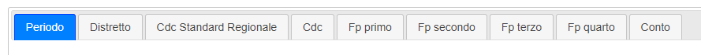
N.B. Ciascun elemento presente all’interno dei diversi TAB della sezione configurazione potrà essere eliminato solo se non utilizzato negli anni attivi all’interno della Piattaforma. La possibilità di eliminazione è esplicitata attraverso la visibilità di un’apposita icona “Cestino” che verrà visualizzata in corrispondenza di ciascun record eliminabile delle tabelle presenti nei diversi TAB e di un apposito pulsante “Elimina” all’interno del dettaglio di ciascun elemento presente nelle tabelle di configurazione. L’assenza dell’icona “cestino” e del pulsante “elimina” sta a significare che quello specifico elemento non è eliminabile poiché utilizzato dal modulo Contabilità Analitica” in uno o più anni di riferimento.
Configurazione Modulo Contabilità Analitica
TAB Periodi
Selezionando il TAB Periodi (Figura 7) verrà proposto, sotto forma di tabella, l’elenco dei periodi già presenti all’interno del DataBase, ogni periodo riporterà le seguenti informazioni:
- Descrizione periodo
- Anno Budget: indica l’anno di budget di riferimento
- Ordinamento anno: definisce l’ordinamento di visualizzazione del periodo nell’anno di riferimento
- Data inizio: data di inizio periodo
- Data fine: data fine periodo
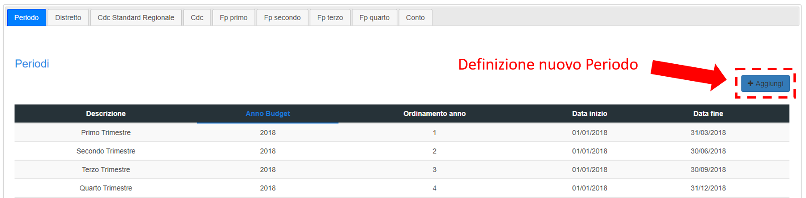
Per creare un nuovo periodo l’amministratore dovrà cliccare sull’apposito pulsante “+ Aggiungi”, compilare i campi richiesti e successivamente cliccare su “Inserisci” (Figura 8)
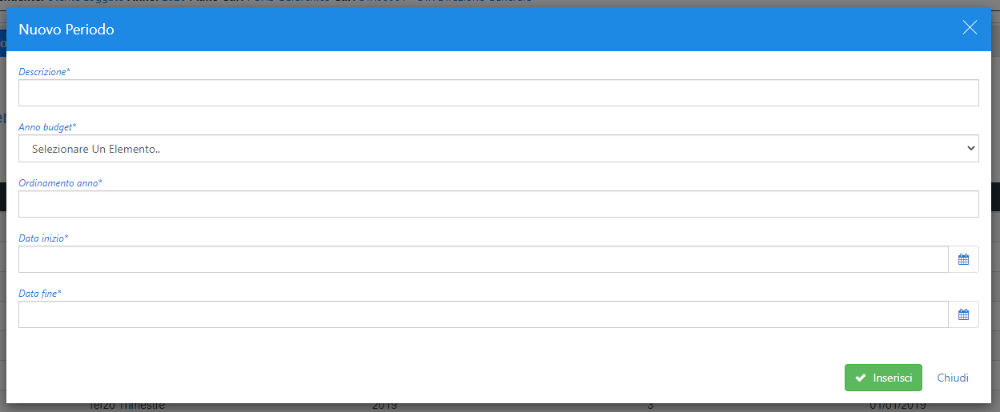
TAB Distretto
Selezionando il TAB Distretto (Figura 9) verrà proposto, sotto forma di tabella, l’elenco dei Distretti territoriali già presenti all’interno del DataBase definiti da un codice e una descrizione univoci.
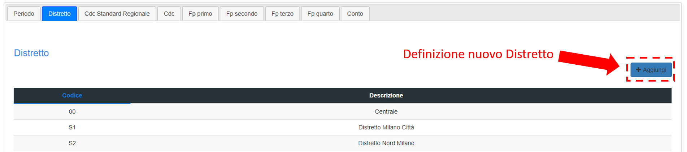
Per creare un nuovo Distretto l’amministratore dovrà cliccare sull’apposito pulsante “+ Aggiungi”, compilare i campi richiesti e successivamente cliccare su “Inserisci” (Figura 10)
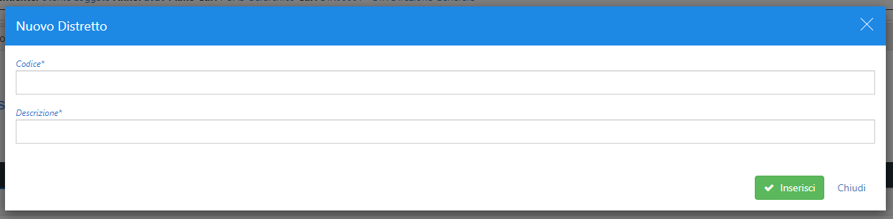
TAB Cdc Standard regionale
Selezionando il TAB Cdc Standard Regionale (Figura 11) verrà proposto, sotto forma di tabella, l’elenco dei Cdc Standard regionali già presenti all’interno del DataBase ciascuno definito da un codice e una descrizione.
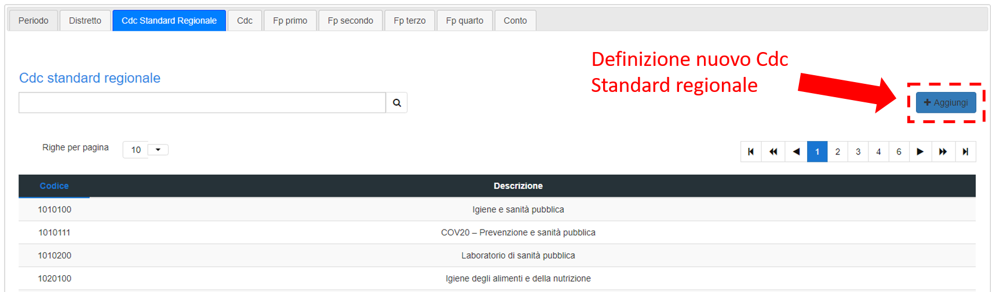
Per creare un nuovo Cdc Standard regionale l’amministratore dovrà cliccare sull’apposito pulsante “+ Aggiungi”, compilare i campi richiesti e successivamente cliccare su “Inserisci” (Figura 12)
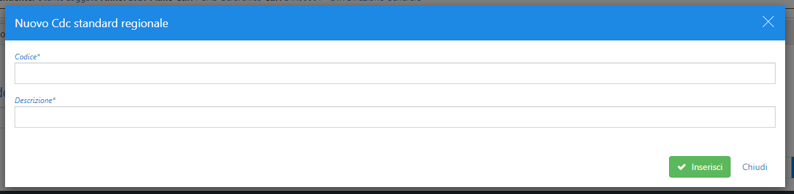
TAB Cdc
Selezionando il TAB Cdc (Figura 13) verrà proposto, sotto forma di tabella, l’elenco dei Cdc Aziendali già presenti all’interno del DataBase ciascuno definito da:
- un codice e una descrizione;
- Cdc Standard regionale di riferimento;
- Cdr aziendale di riferimento;
- Distretto territoriale di riferimento;
- Anno introduzione e anno termine utilizzo.
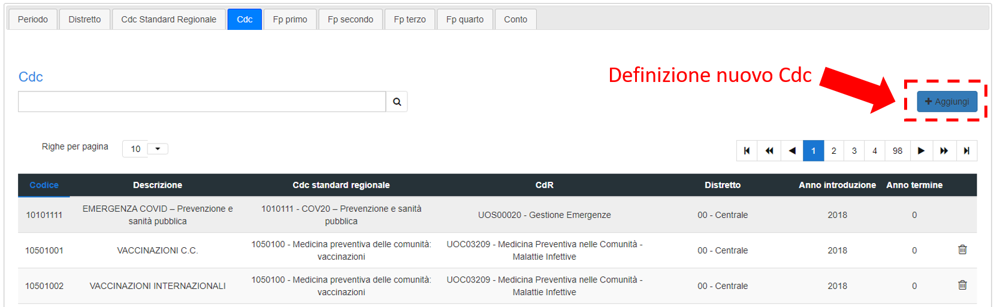
Per creare un nuovo Cdc l’amministratore dovrà cliccare sull’apposito pulsante “+ Aggiungi”, compilare i campi richiesti e successivamente cliccare su “Inserisci” (Figura 14)
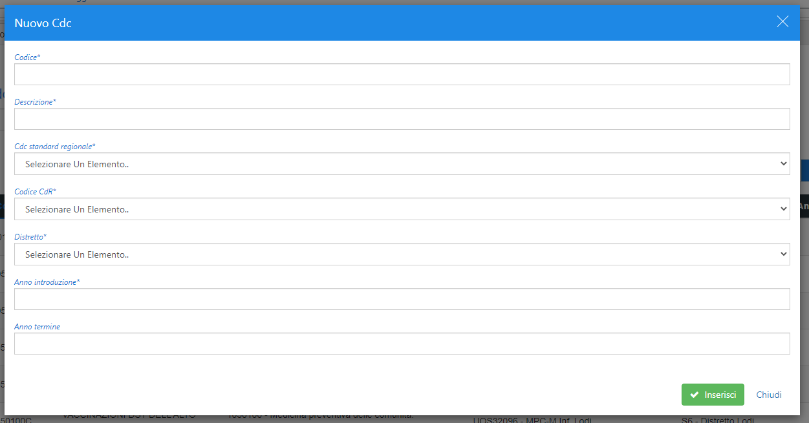
TABs FP (Fattori Produttivi)
Questi quattro TAB (primo, secondo, terzo, quarto) contengono le anagrafiche dei fattori produttivi suddivise per macro aggregati e il collegamento gerarchico tra i vari livelli. In ciascuno di questi quattro Tab saranno presenti i Fattori produttivi già inseriti nel Database e il collegamento con il livello superiore (Figura 15).
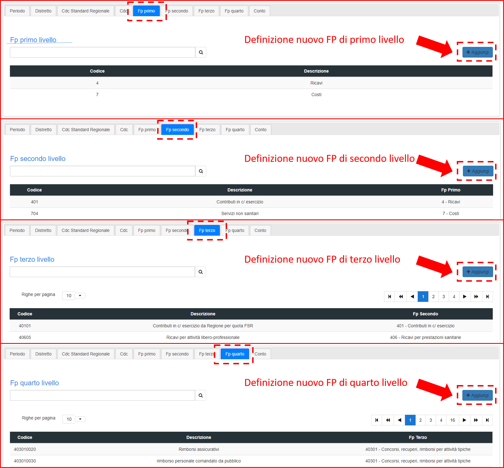
Per creare un nuovo Fattore Produttivo l’amministratore dovrà cliccare sull’apposito pulsante “+ Aggiungi” all’interno del TAB di riferimento, compilare i campi richiesti e successivamente cliccare su “Inserisci” (Figura 16).
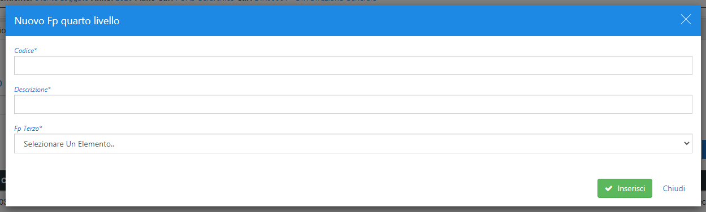
TAB Conto
Selezionando il TAB Conto (Figura 17) verrà proposto, sotto forma di tabella, l’elenco dei Conti Aziendali già presenti all’interno del DataBase ciascuno definito da:
- Codice;
- Descrizione;
- Fattore Produttivo di Quarto Livello (FP Quarto) di riferimento.
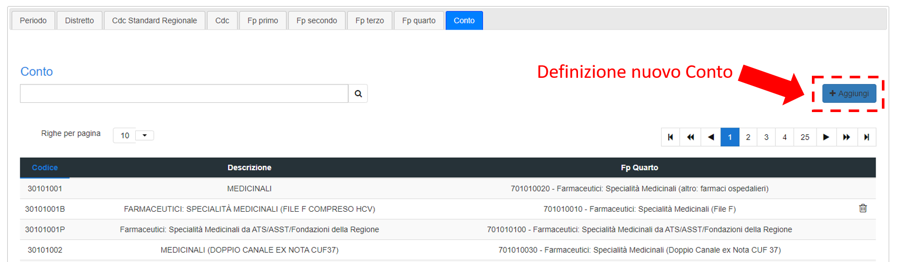
Per creare un nuovo Cdc l’amministratore dovrà cliccare sull’apposito pulsante “+ Aggiungi”, compilare i campi richiesti e successivamente cliccare su “Inserisci” (Figura 18).
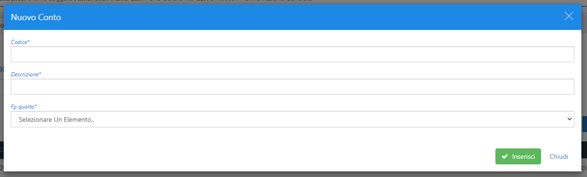